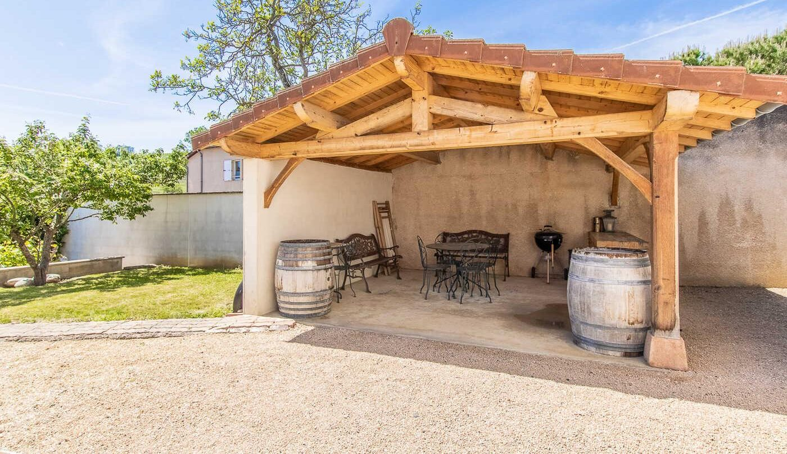
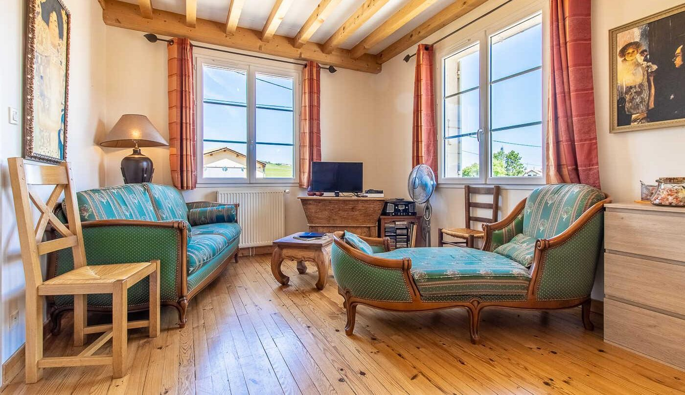
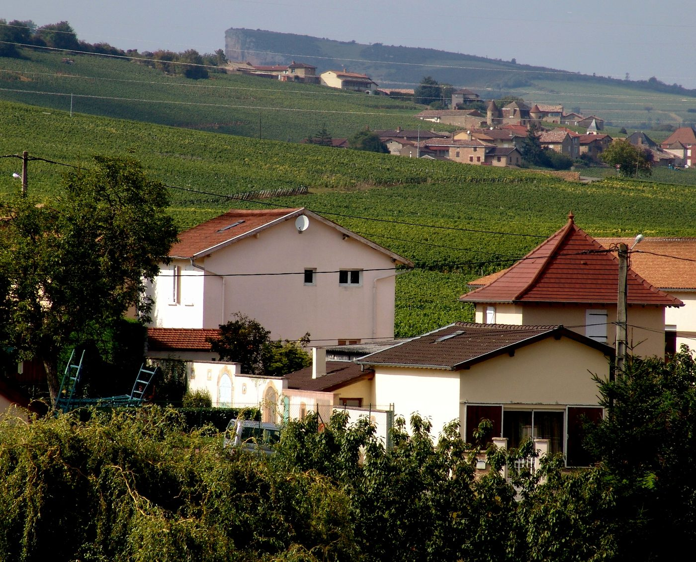
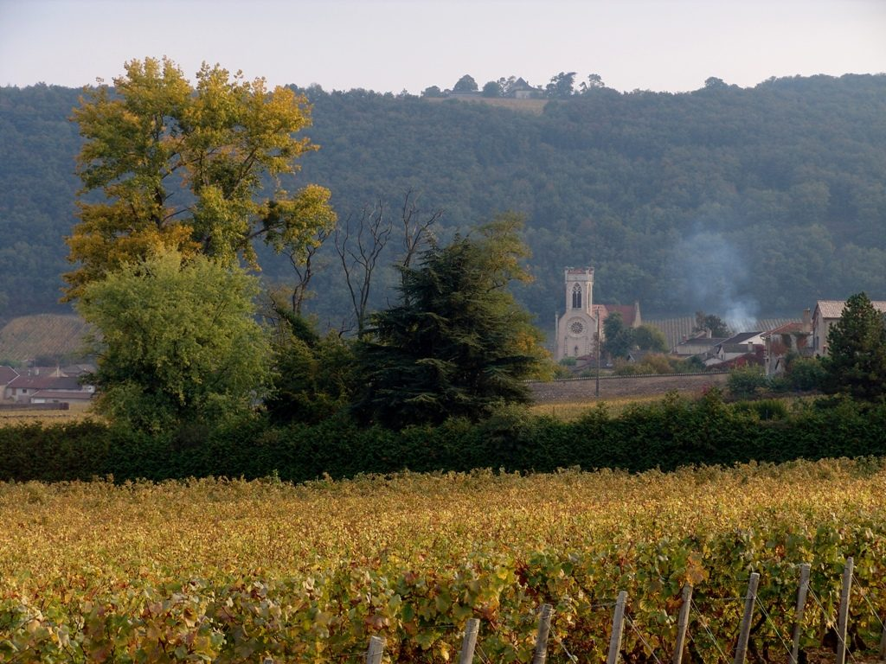

« Quel bonheur de se réveiller face aux vignes. Chambre d’hôtes très agréable près du village de Fuissé. Cela nous a donné envie de revenir plus longtemps dans la région. »


4,5/5sur Gîtes de France · 6 avis
La Vigneraie, chambres d’hôtes au cœur du Pouilly-Fuissé
Deux chambres face aux vignes chez Sophie, vigneronne, à deux pas du village de Fuissé : à 6 minutes de la gare TGV Mâcon-Loché et 14 minutes de la Roche de Solutré.
- Face aux vignesdu Pouilly-Fuissé
- Petit déjeunercompris, apporté par Sophie
- Une pièce de viecuisine et salon pour vous
- Gare TGVMâcon-Loché à 6 minutes
Les chambres
Deux chambres, deux grands crus
01La chambre jaune
Chambre Pouilly-Fuissé
2 personnes · 110 € la nuit, petit déjeuner compris
Les murs couleur soleil, un grand lit de 160 et sa salle d’eau privative, face aux vignes.
Voir la chambre 02La chambre blanche
02La chambre blanche
Chambre Saint-Véran
2 personnes · 98 € la nuit, petit déjeuner compris
Une chambre claire aux paysages peints, sa salle d’eau et ses toilettes indépendantes.
Voir la chambre
03Toute la maison
La maison entière
4 à 6 personnes · 230 € la nuit, petits déjeuners compris
Les deux chambres, la mezzanine pour les enfants et la pièce de vie, rien que pour vous.
Voir la maisonLes deux chambres ont leur accès indépendant au premier étage. Le petit déjeuner est toujours compris.Comparer
La pièce de vie
Une maison de 1953, rien que pour les hôtes
La maison de pays des années cinquante a été entièrement rénovée. Tout le premier étage, 100 m², est à vous.
- Le salon
Une chaise longue, un canapé, la télévision et le wifi, sous les poutres claires.
- La cuisine
Un coin cuisine tout équipé : lave-vaisselle, réfrigérateur, micro-ondes, quatre feux, cafetière et bouilloire.
- Le petit déjeuner
Sophie l’apporte le matin : on le prend à la grande table ronde, face aux fenêtres.
- Dehors
La vaste cour, le jardinet et la terrasse abritée avec sa cuisine d’été et son barbecue.




À La Vigneraie
Compris dans le séjour
Le petit déjeunercopieux, apporté par Sophie
Le linge de maisondraps, couettes et couvertures
Une pièce de viesalon et cuisine pour les hôtes
Le wifidans toute la maison
Un parking privédevant la maison
Un local à vélosfermé, pour vélos et motos

Votre hôte
Sophie, vigneronne
Issue d’une famille de vignerons depuis cinq générations, « de mère en fille ou presque », Sophie vous ouvre sa maison d’hôtes, sur le petit domaine de 4,5 ha qu’elle cultive en bio avec son mari.
Pouilly-Fuisséle nom de la chambre jaune
Saint-Véranle nom de la chambre blanche
- ★★★★★
Sophie est charmante et son vin délicieux ! Réservez les yeux fermés !
Fred, sur Gîtes de France - ★★★★★
Sophie notre hôte nous a bien accueilli et nous avons eu le droit à une dégustation de ses vins.
Sophie, sur Gîtes de France
En images
La Vigneraie au fil des saisons
Ils sont venus
Ce qu’en disent nos voyageurs
4,5/5Gîtes de France6 avis vérifiés
5/5Accueil du propriétairesur tous les avis
« Bel endroit beau village, Sophie est charmante et son vin délicieux ! Réservez les yeux fermés ! »
« Le gîte est au calme dans le village de Fuissé dans les vignes. Sophie notre hôte nous a bien accueilli et nous avons eu le droit à une dégustation de ses vins. »
« Gîte très bien situé et pratique. Flexibilité du propriétaire pour une arrivée tardive. Très bon petit déjeuner. Merci pour tout ça ! »
« Nuit tranquille à Fuissé. Accueil parfait de Sophie. Petit déjeuner copieux. »
« On se plonge dans le pays des vignes et du retour à la terre. »
Autour de Fuissé
Fuissé et alentours
Les activités à voir

La Roche de Solutré
Grand Site de France, à 14 minutes
Le village de Fuissé
Fleuron du Pouilly-Fuissé, à pied
La Roche de Vergisson
Sa voisine, au-dessus des vignes
L’abbaye de Cluny
À 23 minutes
Tournus et Saint-Philibert
À 32 minutes
Le village de Brancion
Perché sur sa colline, à 41 minutes
Le lavoir du XVIIe siècle
Dans le village, à pied
Une nuit dans les vignes
Une étape sur la route des vins, un week-end à deux ou des vacances en famille : choisissez vos dates, Sophie s’occupe du reste.
Réserver en ligne
Réserver en ligne
Vos nuits, en direct
Choisissez vos dates sur le planning : vous voyez tout de suite ce qui est libre et le prix de votre séjour, taxe de séjour comprise, sans frais de plateforme.
Une question avant de réserver ? Écrivez à Sophie
- 1Vos datesle planning est à jour, les nuits prises sont fermées
- 2Votre chambrePouilly-Fuissé, Saint-Véran ou toute la maison
- 3Vos optionsvotre animal de compagnie
- 4Vos coordonnéesla demande arrive chez Sophie
Questions fréquentes
Avant de réserver
Comment réserver ?
En ligne, avec le bouton « Réserver » : vous choisissez vos dates sur le planning, une chambre ou la maison entière : le prix du séjour s’affiche aussitôt, taxe de séjour comprise. Vous pouvez aussi appeler Sophie au 06 08 31 56 79.
Le petit déjeuner est-il compris ?
Oui. Sophie vous apporte le matin un petit déjeuner copieux, que vous prenez à la table de la pièce de vie réservée aux hôtes. Pour un séjour à la semaine, il se règle à part : demandez à Sophie.
Peut-on louer toute la maison ?
Oui : la maison entière (les deux chambres, la mezzanine et la pièce de vie) se loue 230 € la nuit, de 4 à 6 personnes, petits déjeuners compris. Pour un séjour à la semaine ou les deux chambres sur plusieurs nuits, Sophie propose un tarif préférentiel : appelez-la.
Peut-on venir avec des enfants ?
Oui. Sous le toit, par un escalier en colimaçon, la mezzanine de 35 m² accueille deux enfants pour 20 € la nuit, petit déjeuner compris. Elle se loue avec une chambre : précisez-le à Sophie en réservant.
Les animaux sont-ils acceptés ?
Oui, votre animal de compagnie est le bienvenu, avec un supplément de 5 €.
Peut-on visiter le domaine ?
Sophie est vigneronne : la maison est sur le petit domaine familial qu’elle cultive en bio avec son mari. Une visite et une dégustation sont possibles sur demande, pendant votre séjour.
Et à vélo ?
Un local à vélos fermé vous attend, avec le parking privé. La Voie Verte de la Grande Boucle de Bourgogne du Sud passe à 3,5 km et la Voie Bleue, le long de la Saône, à 9 km.